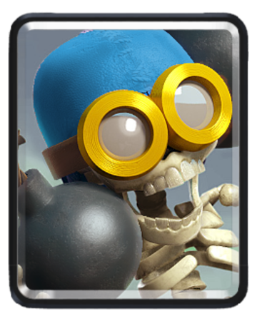
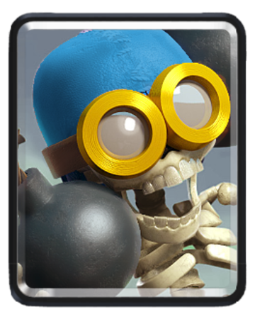

- Giant: 5 elixir
- Witch: 5 elixir
- Skeletons: 1 elixir
- Lightning: 6 elixir
- Cannon: 3 elixir
- Zap: 2 elixir
- Bomber: 3 elixir
- Baby dragon: 4 elixir
Average elixir: 3.6 elixir


 


Introduction:
This deck is one that I made out of a few combos, like Giant + Witch, Baby dragon + Cannon defence, and Giant + support. This deck is 3.6, so it should have a good time on the ladder.Card roles
- Giant-This is your main tank so use it wisely for pushes! Use Giant Witch for a huge devestating push. Also, you can pair it with the Baby dragon or Bomber to demolish Skeleton armies blocking your path. Also, start with the Giant in the very back so that you can gain elixir while it walks up to the bridge.
- Witch-This is a great spawner, spawning 4 skeletons every 7 seconds. When you use it behind a Giant, you can strip down their ground and air alike. You can use this also to defence and counter lone Baby dragons, Princes, Giants, Mini P.E.K.K.A.s, and many more single target cards. When spawned behind the King tower, it can spawn nearly a Skeleton army and attack the tower behind a Giant.
- Skeletons-Cheap distraction, cycle card, and 67 dps times 3 which is like 5,000 dps with this card, don't check my math, all just for... 1 ELIXIR!?!?!?! Just at tournament standards(level 9)!!! But this card is pretty much only for defending Giants and building targeting only ground troops in ladder other than reasons said above.
- Lightning-For y'all new Arena 4 players, lighning might seem great and easy to
use at first and that is true. Lightning is good, but once you play for a while,
you'll find out that it is not very easy to use after all. You see, the
Lightning only targets 3 troops, buildings, or Crown towers with the most
health, so if there is a Witch and four summoned Skeletons and the tower is at
two health, then the lightning will only hit the Witch and 2 Skeletons even
though the tower was in the radius of the lightning because the Lightning hit
the things with most health. To avoid this, aim the lightning on only the
tower and not the Witch so that the tower is destroyed. The Lightning is good
for taking out:
- Musketeers!
- Witches!
- Battle ram!
- Kight if Lightning is overleveled
- And any fireballies that is not more than three.
- Cannon-BOOM! The Cannon is here!